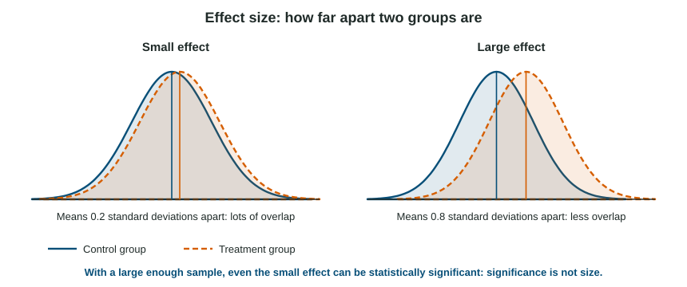

Statistical Significance and Effect Size
Inferential statistics let researchers judge whether a sample’s result reflects the population.
Part 1 · Hook
Why this matters
Part 2 · Before you start
What this builds on
Part 3 · Prerequisite check
Quick check before you start
1. Two classes have the same mean score, 75, but Class B has a much larger standard deviation. What does that mean?
- Class B’s scores are more spread out
- Class B scored higher on average
- Class B has more students
- Class B’s median is lower
Show the answer
A larger standard deviation means the scores are more spread out around the mean.
- Correct: Class B’s scores are more spread out:
- Class B scored higher on average:
- Class B has more students:
- Class B’s median is lower:
2. Researchers draw 300 names at random from a list of every student in a state. What does this random sampling allow?
- Generalizing the results to the state’s students
- Claiming cause and effect
- Keeping the data confidential
- Skipping informed consent
Show the answer
Random sampling makes a representative sample likely, so results can generalize to the population.
- Correct: Generalizing the results to the state’s students:
- Claiming cause and effect:
- Keeping the data confidential:
- Skipping informed consent:
Part 4 · See it
See it first

Part 5 · Step by step
How it works, step by step
- Any two groups differ a little by chance, even when a treatment does nothingresearchers need to judge whether a difference is bigger than chance usually produces
- Inferential statistics estimate how likely a difference this large would be by chance alonebelow 5% (), the result is called statistically significant
- A very large sample makes even tiny differences unlikely to be chancea significant result can still be small, so effect size is reported to say how big it is
Part 6 · Key ideas
Key ideas
- Descriptive statistics summarize a sample; inferential statistics use the sample to draw conclusions about the population.
- Statistically significant (): a difference this large would be unlikely if only chance were at work. Not significant: the difference could plausibly be chance.
- Effect size says how big the difference or relationship is. Significance is not size: big samples make small effects significant.
- Always read a result for its groups: which group was higher, by how much, whether it was significant, and how large the effect was.
Part 7 · Misconception
A common mistake
The wrong idea: "Statistically significant" means the effect is large or important, and "not significant" proves there is no effect.
What actually happens: Significant only means unlikely to be chance; the size comes from the effect size. Not significant means chance cannot be ruled out, which is not proof of no effect, especially in a small study.
Part 8 · Check yourself
Check yourself
Exam-style questions. Anything you miss goes into your review queue.
1. A study reports that students who slept 8 hours recalled more words than students who slept 5 hours, and that the difference was statistically significant (). What does "statistically significant" mean here?
- The difference is unlikely to be due to chance
- The difference is large and important for students
- Sleep definitely causes better recall in everyone
- About 5% of the students recalled more words
Show the answer
A statistically significant result is one that would be unlikely if only chance were at work. By convention, psychologists use : less than a 5% chance of a difference this large if the groups did not really differ.
- Correct: The difference is unlikely to be due to chance: Right: a result this large would rarely appear by chance if sleep made no difference.
- The difference is large and important for students: Significance does not say how big or important a difference is; that is effect size.
- Sleep definitely causes better recall in everyone: Significance is a statement about chance, not certainty, and not about every individual.
- About 5% of the students recalled more words: is a probability about chance, not a share of the students.
2. A study finds that a reading app raised test scores by 3 points, but the difference was not statistically significant. Which interpretation is best?
- The app lowered test scores by 3 points
- The 3-point gain could plausibly be due to chance
- The study proves that the app has no effect
- The app works, though for just 3% of the students
Show the answer
Not statistically significant means the difference is small enough that chance alone could plausibly explain it. It does not prove the app does nothing.
- The app lowered test scores by 3 points: The app group scored 3 points higher, not lower.
- Correct: The 3-point gain could plausibly be due to chance: Right: "not significant" means chance cannot be ruled out.
- The study proves that the app has no effect: Failing to find a significant effect is not proof of no effect; the study may have been too small.
- The app works, though for just 3% of the students: Neither significance nor the 3-point difference says anything about a share of students.
3. Study A, with 20,000 participants, finds a statistically significant difference of 0.5 points on a 100-point scale. Study B, with 40 participants, finds a 15-point difference that is not significant. What explains this?
- Study A found the larger effect because its result was significant
- Study B probably made an error, since 15 points is a big difference
- Big samples make tiny effects significant; small ones can miss big ones
- The two studies used different operational definitions of the scale
Show the answer
With a huge sample even a trivial difference is unlikely to be chance, so it is significant. With a small sample, chance can produce big differences, so a large one may still not be significant. That is why researchers report effect size too.
- Study A found the larger effect because its result was significant: 0.5 points is a much smaller effect than 15 points; significance is not size.
- Study B probably made an error, since 15 points is a big difference: Nothing points to an error: with only 40 people, chance alone can produce a large gap, so a 15-point difference can still fail to be significant.
- Correct: Big samples make tiny effects significant; small ones can miss big ones: Right: significance depends on sample size as well as effect size.
- The two studies used different operational definitions of the scale: Both used a 100-point scale; the difference comes from sample size.
Data
Does a 10-minute walk before a test reduce worry?
4. Students were randomly assigned to walk or sit before a test, then rated their worry. Which group reported less worry on average?
- The sitting group, at 5.6 compared with 4.8
- Neither, since both ratings are near the middle
- The walking group, at 4.8 compared with 5.6
- Both groups, since the ratings were below 10
Show the answer
The walking group’s mean worry rating (4.8) is 0.8 points lower than the sitting group’s (5.6).
- The sitting group, at 5.6 compared with 4.8: A higher rating means more worry, not less.
- Neither, since both ratings are near the middle: Both are near the middle of the scale, but 4.8 is lower than 5.6.
- Correct: The walking group, at 4.8 compared with 5.6: Right: a lower rating means less worry.
- Both groups, since the ratings were below 10: The question compares the two groups with each other.
5. The researchers report that the difference was statistically significant (). What does this tell you about the 0.8-point difference?
- It is large enough to matter to most students
- It will appear in 95% of students who walk
- It was caused by the students’ expectations
- It is unlikely to have arisen by chance alone
Show the answer
Statistically significant means a difference this large would rarely appear if walking made no difference. Because students were randomly assigned, the walk is the likely cause.
- It is large enough to matter to most students: Significance does not say the difference is large or matters to everyone.
- It will appear in 95% of students who walk: The .05 is a probability about chance, not a share of students.
- It was caused by the students’ expectations: Significance says nothing about what caused the difference.
- Correct: It is unlikely to have arisen by chance alone: Right: that is what statistical significance means.
6. The researchers also report that the effect size was small. How should this be read alongside the significant result?
- The walk probably lowered worry, but only by a little
- The result is not real because the effect was small
- The walk had a large effect on how much students worried
- The effect size shows that the result was due to chance
Show the answer
Significance and size are separate questions. Here the difference is probably not chance, but it is modest: a 0.8-point drop on a 10-point scale.
- Correct: The walk probably lowered worry, but only by a little: Right: significant (probably real) and small (not large) can both be true.
- The result is not real because the effect was small: A small effect can still be a real one; that is what significance addresses.
- The walk had a large effect on how much students worried: The researchers report the effect size as small.
- The effect size shows that the result was due to chance: Effect size is about size; chance is what significance addresses.
Part 9 · Summary
Summary
Part 10 · Up next
What comes next
Part 11 · Connections